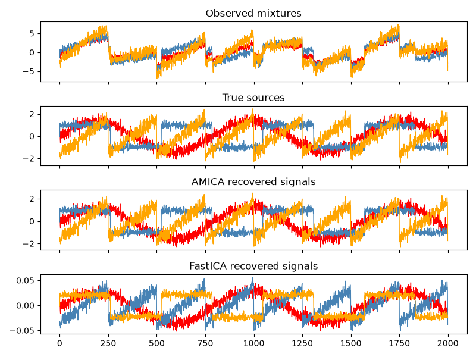

Note
Go to the end to download the full example code.
Blind Source Separation with AMICA & FastICA#
An example of estimating sources from noisy mixtures.
ICA separates independent sources given only mixed microphone recordings. Imagine three instruments playing simultaneously and three microphones recording the mixtures. ICA recovers the instrument tracks because the sources are non-Gaussian. PCA, by contrast, fails in this setting.
Note
This example is adapted from the Scikit-Learn documentation.
Generate sample data#
import numpy as np
from scipy import signal
rng = np.random.default_rng(0)
n_samples = 2000
time = np.linspace(0, 8, n_samples)
s1 = np.sin(2 * time) # Sinusoidal
s2 = np.sign(np.sin(3 * time)) # Square wave
s3 = signal.sawtooth(2 * np.pi * time) # Sawtooth
S = np.c_[s1, s2, s3]
S += 0.2 * rng.standard_normal(S.shape) # Add noise
S /= S.std(axis=0) # Standardize
A = np.array([[1, 1, 1],
[0.5, 2, 1.0],
[1.5, 1.0, 2.0]]) # Mixing matrix
X = S @ A.T # Observed mixtures
Run AMICA and FastICA#
from amica import AMICA
from sklearn.decomposition import FastICA
models = {}
labels = {}
# AMICA
# We instantiate amica.AMICA and call fit..
ica = AMICA(
n_components=3,
whiten="zca",
random_state=0,
optimizer="daarem",
optimizer_kwargs={
"accelerator_order": 3,
"accelerator_damping": 0.8,
"accelerator_ridge": 1e-8,
"accelerator_eps_monotone": 0,
"accelerator_start_iter": 51,
"accelerator_period": 3,
},
verbose=2
)
models["AMICA"] = ica.fit_transform(X)
labels["AMICA"] = "AMICA recovered signals"
INFO getting the mean ...
INFO Getting the covariance matrix ...
INFO doing eigenvalue decomposition for 3 features ...
INFO minimum eigenvalues: [0.05201252]
INFO maximum eigenvalues: [14.0572034 1.35729453 0.05201252]
INFO num eigvals kept: 3
INFO Sphering the data...
INFO numeigs = 3, nw = 3
INFO 1: block size = 2000
INFO Solving. (please be patient, this may take a while)...
INFO Iteration 1, lrate = 0.05000, LL = -1.4208643, nd = 0.1965180, D =
0.00000 took 0.00 seconds
INFO Iteration 2, lrate = 0.05000, LL = -1.3636536, nd = 0.1723261, D =
0.00000 took 0.00 seconds
INFO Iteration 3, lrate = 0.05000, LL = -1.3238623, nd = 0.2980232, D =
0.00000 took 0.00 seconds
INFO Iteration 4, lrate = 0.05000, LL = -1.2865584, nd = 0.4412654, D =
0.00000 took 0.00 seconds
INFO Iteration 5, lrate = 0.05000, LL = -1.2385767, nd = 0.5302712, D =
0.00000 took 0.00 seconds
INFO Iteration 6, lrate = 0.05000, LL = -1.1797772, nd = 0.5185603, D =
0.00000 took 0.08 seconds
INFO Iteration 7, lrate = 0.05000, LL = -1.1225606, nd = 0.4013239, D =
0.00000 took 0.01 seconds
INFO Iteration 8, lrate = 0.05000, LL = -1.0865829, nd = 0.2305540, D =
0.00000 took 0.00 seconds
INFO Iteration 9, lrate = 0.05000, LL = -1.0738310, nd = 0.1660310, D =
0.00000 took 0.08 seconds
INFO Iteration 10, lrate = 0.05000, LL = -1.0678697, nd = 0.1539337, D =
0.00000 took 0.00 seconds
INFO Iteration 11, lrate = 0.05000, LL = -1.0633096, nd = 0.1482986, D =
0.00000 took 0.00 seconds
INFO Iteration 12, lrate = 0.05000, LL = -1.0596034, nd = 0.1333072, D =
0.00000 took 0.00 seconds
INFO Iteration 13, lrate = 0.05000, LL = -1.0565292, nd = 0.1328886, D =
0.00000 took 0.09 seconds
INFO Iteration 14, lrate = 0.05000, LL = -1.0539693, nd = 0.1170593, D =
0.00000 took 0.00 seconds
INFO Iteration 15, lrate = 0.05000, LL = -1.0519178, nd = 0.1299362, D =
0.00000 took 0.00 seconds
INFO Iteration 16, lrate = 0.05000, LL = -1.0503348, nd = 0.1265691, D =
0.00000 took 0.09 seconds
INFO Iteration 17, lrate = 0.05000, LL = -1.0493665, nd = 0.1684180, D =
0.00000 took 0.01 seconds
INFO Iteration 18, lrate = 0.05000, LL = -1.0491577, nd = 0.2095800, D =
0.00000 took 0.00 seconds
INFO Iteration 19, lrate = 0.05000, LL = -1.0505280, nd = 0.2933917, D =
0.00000 took 0.08 seconds
WARNING Likelihood decreasing!
INFO Iteration 20, lrate = 0.05000, LL = -1.0537696, nd = 0.4207022, D =
0.00000 took 0.01 seconds
WARNING Likelihood decreasing!
INFO Iteration 21, lrate = 0.05000, LL = -1.0631841, nd = 0.5297685, D =
0.00000 took 0.00 seconds
WARNING Likelihood decreasing!
INFO Iteration 22, lrate = 0.02500, LL = -1.0701513, nd = 0.7366217, D =
0.00000 took 0.00 seconds
WARNING Likelihood decreasing!
INFO Iteration 23, lrate = 0.02500, LL = -1.0637904, nd = 0.4346021, D =
0.00000 took 0.08 seconds
INFO Iteration 24, lrate = 0.02500, LL = -1.0455442, nd = 0.1676119, D =
0.00000 took 0.00 seconds
INFO Iteration 25, lrate = 0.02500, LL = -1.0441093, nd = 0.1033307, D =
0.00000 took 0.00 seconds
INFO Iteration 26, lrate = 0.02500, LL = -1.0433850, nd = 0.0767973, D =
0.00000 took 0.00 seconds
INFO Iteration 27, lrate = 0.02500, LL = -1.0429549, nd = 0.0631458, D =
0.00000 took 0.08 seconds
INFO Iteration 28, lrate = 0.02500, LL = -1.0426414, nd = 0.0540902, D =
0.00000 took 0.00 seconds
INFO Iteration 29, lrate = 0.02500, LL = -1.0423719, nd = 0.0498047, D =
0.00000 took 0.00 seconds
INFO Iteration 30, lrate = 0.02500, LL = -1.0421284, nd = 0.0466436, D =
0.00000 took 0.00 seconds
INFO Iteration 31, lrate = 0.02500, LL = -1.0419023, nd = 0.0449003, D =
0.00000 took 0.00 seconds
INFO Iteration 32, lrate = 0.02500, LL = -1.0416904, nd = 0.0434227, D =
0.00000 took 0.01 seconds
INFO Iteration 33, lrate = 0.02500, LL = -1.0414902, nd = 0.0423446, D =
0.00000 took 0.00 seconds
INFO Iteration 34, lrate = 0.02500, LL = -1.0413049, nd = 0.0413000, D =
0.00000 took 0.00 seconds
INFO Iteration 35, lrate = 0.02500, LL = -1.0411408, nd = 0.0406732, D =
0.00000 took 0.00 seconds
INFO Iteration 36, lrate = 0.02500, LL = -1.0409856, nd = 0.0397119, D =
0.00000 took 0.09 seconds
INFO Iteration 37, lrate = 0.02500, LL = -1.0408352, nd = 0.0391197, D =
0.00000 took 0.00 seconds
INFO Iteration 38, lrate = 0.02500, LL = -1.0406891, nd = 0.0383731, D =
0.00000 took 0.00 seconds
INFO Iteration 39, lrate = 0.02500, LL = -1.0405470, nd = 0.0378065, D =
0.00000 took 0.00 seconds
INFO Iteration 40, lrate = 0.02500, LL = -1.0404085, nd = 0.0371885, D =
0.00000 took 0.08 seconds
INFO Iteration 41, lrate = 0.02500, LL = -1.0402732, nd = 0.0366582, D =
0.00000 took 0.01 seconds
INFO Iteration 42, lrate = 0.02500, LL = -1.0401410, nd = 0.0361047, D =
0.00000 took 0.00 seconds
INFO Iteration 43, lrate = 0.02500, LL = -1.0400119, nd = 0.0355872, D =
0.00000 took 0.08 seconds
INFO Iteration 44, lrate = 0.02500, LL = -1.0398863, nd = 0.0350726, D =
0.00000 took 0.01 seconds
INFO Iteration 45, lrate = 0.02500, LL = -1.0397649, nd = 0.0345777, D =
0.00000 took 0.00 seconds
INFO Iteration 46, lrate = 0.02500, LL = -1.0396483, nd = 0.0340770, D =
0.00000 took 0.00 seconds
INFO Iteration 47, lrate = 0.02500, LL = -1.0395371, nd = 0.0335802, D =
0.00000 took 0.00 seconds
INFO Iteration 48, lrate = 0.02500, LL = -1.0394312, nd = 0.0330925, D =
0.00000 took 0.02 seconds
INFO Iteration 49, lrate = 0.02500, LL = -1.0393300, nd = 0.0326123, D =
0.00000 took 0.00 seconds
INFO Iteration 50, lrate = 0.05000, LL = -1.0392328, nd = 0.0093887, D =
0.00000 took 0.00 seconds
INFO Starting Newton ... setting numdecs to 0
INFO Iteration 51, lrate = 0.10000, LL = -1.0391712, nd = 0.0092939, D =
0.00000 took 0.01 seconds
INFO iter 51 | EM ll=-1.0391712 | accel=daarem | hist=3 | accepted=True |
cand_ll=-1.0390269 | reason=validated
INFO Iteration 52, lrate = 0.20000, LL = -1.0390269, nd = 0.0090017, D =
0.00000 took 0.02 seconds
INFO Iteration 53, lrate = 0.30000, LL = -1.0388488, nd = 0.0085231, D =
0.00000 took 0.00 seconds
INFO Iteration 54, lrate = 0.40000, LL = -1.0386135, nd = 0.0078658, D =
0.00000 took 0.08 seconds
INFO iter 54 | EM ll=-1.0386135 | accel=daarem | hist=3 | accepted=True |
cand_ll=-1.0385569 | reason=validated
INFO Iteration 55, lrate = 0.50000, LL = -1.0385569, nd = 0.0077010, D =
0.00000 took 0.01 seconds
INFO Iteration 56, lrate = 0.60000, LL = -1.0382434, nd = 0.0067033, D =
0.00000 took 0.00 seconds
INFO Iteration 57, lrate = 0.70000, LL = -1.0379506, nd = 0.0056721, D =
0.00000 took 0.09 seconds
INFO iter 57 | EM ll=-1.0379506 | accel=daarem | hist=3 | accepted=True |
cand_ll=-1.0378994 | reason=validated
INFO Iteration 58, lrate = 0.80000, LL = -1.0378994, nd = 0.0055445, D =
0.00000 took 0.01 seconds
INFO Iteration 59, lrate = 0.90000, LL = -1.0376287, nd = 0.0044116, D =
0.00000 took 0.08 seconds
INFO Iteration 60, lrate = 1.00000, LL = -1.0374198, nd = 0.0034455, D =
0.00000 took 0.01 seconds
INFO iter 60 | EM ll=-1.0374198 | accel=daarem | hist=3 | accepted=True |
cand_ll=-1.0372738 | reason=validated
INFO Iteration 61, lrate = 1.00000, LL = -1.0372738, nd = 0.0027901, D =
0.00000 took 0.01 seconds
INFO Iteration 62, lrate = 1.00000, LL = -1.0371612, nd = 0.0021496, D =
0.00000 took 0.09 seconds
INFO Iteration 63, lrate = 1.00000, LL = -1.0370820, nd = 0.0016812, D =
0.00000 took 0.00 seconds
INFO iter 63 | EM ll=-1.0370820 | accel=daarem | hist=3 | accepted=True |
cand_ll=-1.0368980 | reason=validated
INFO Iteration 64, lrate = 1.00000, LL = -1.0368980, nd = 0.0002007, D =
0.00000 took 0.01 seconds
INFO Iteration 65, lrate = 1.00000, LL = -1.0368872, nd = 0.0001608, D =
0.00000 took 0.08 seconds
INFO Iteration 66, lrate = 1.00000, LL = -1.0368791, nd = 0.0001586, D =
0.00000 took 0.00 seconds
INFO iter 66 | EM ll=-1.0368791 | accel=daarem | hist=3 | accepted=True |
cand_ll=-1.0368615 | reason=validated
INFO Iteration 67, lrate = 1.00000, LL = -1.0368615, nd = 0.0001318, D =
0.00000 took 0.01 seconds
INFO Iteration 68, lrate = 1.00000, LL = -1.0368585, nd = 0.0000860, D =
0.00000 took 0.08 seconds
INFO Iteration 69, lrate = 1.00000, LL = -1.0368561, nd = 0.0000498, D =
0.00000 took 0.00 seconds
INFO iter 69 | EM ll=-1.0368561 | accel=daarem | hist=3 | accepted=True |
cand_ll=-1.0368506 | reason=validated
INFO Iteration 70, lrate = 1.00000, LL = -1.0368506, nd = 0.0000899, D =
0.00000 took 0.01 seconds
INFO Iteration 71, lrate = 1.00000, LL = -1.0368492, nd = 0.0000654, D =
0.00000 took 0.09 seconds
INFO Iteration 72, lrate = 1.00000, LL = -1.0368479, nd = 0.0000508, D =
0.00000 took 0.00 seconds
INFO iter 72 | EM ll=-1.0368479 | accel=daarem | hist=3 | accepted=True |
cand_ll=-1.0368433 | reason=validated
INFO Iteration 73, lrate = 1.00000, LL = -1.0368433, nd = 0.0000307, D =
0.00000 took 0.09 seconds
INFO Iteration 74, lrate = 1.00000, LL = -1.0368422, nd = 0.0000328, D =
0.00000 took 0.00 seconds
INFO Iteration 75, lrate = 1.00000, LL = -1.0368412, nd = 0.0000220, D =
0.00000 took 0.00 seconds
INFO iter 75 | EM ll=-1.0368412 | accel=daarem | hist=3 | accepted=True |
cand_ll=-1.0368322 | reason=validated
INFO Iteration 76, lrate = 1.00000, LL = -1.0368322, nd = 0.0000270, D =
0.00000 took 0.09 seconds
INFO Iteration 77, lrate = 1.00000, LL = -1.0368314, nd = 0.0000396, D =
0.00000 took 0.00 seconds
INFO Iteration 78, lrate = 1.00000, LL = -1.0368307, nd = 0.0000189, D =
0.00000 took 0.00 seconds
INFO iter 78 | EM ll=-1.0368307 | accel=daarem | hist=3 | accepted=True |
cand_ll=-1.0368191 | reason=validated
INFO Iteration 79, lrate = 1.00000, LL = -1.0368191, nd = 0.0000607, D =
0.00000 took 0.09 seconds
INFO Iteration 80, lrate = 1.00000, LL = -1.0368186, nd = 0.0000665, D =
0.00000 took 0.00 seconds
INFO Iteration 81, lrate = 1.00000, LL = -1.0368182, nd = 0.0000395, D =
0.00000 took 0.00 seconds
INFO iter 81 | EM ll=-1.0368182 | accel=daarem | hist=3 | accepted=True |
cand_ll=-1.0368142 | reason=validated
INFO Iteration 82, lrate = 1.00000, LL = -1.0368142, nd = 0.0000390, D =
0.00000 took 0.09 seconds
INFO Iteration 83, lrate = 1.00000, LL = -1.0368139, nd = 0.0000430, D =
0.00000 took 0.00 seconds
INFO Iteration 84, lrate = 1.00000, LL = -1.0368137, nd = 0.0000265, D =
0.00000 took 0.00 seconds
INFO iter 84 | EM ll=-1.0368137 | accel=daarem | hist=3 | accepted=True |
cand_ll=-1.0368105 | reason=validated
INFO Iteration 85, lrate = 1.00000, LL = -1.0368105, nd = 0.0000261, D =
0.00000 took 0.09 seconds
INFO Iteration 86, lrate = 1.00000, LL = -1.0368103, nd = 0.0000262, D =
0.00000 took 0.00 seconds
INFO Iteration 87, lrate = 1.00000, LL = -1.0368102, nd = 0.0000185, D =
0.00000 took 0.00 seconds
INFO iter 87 | EM ll=-1.0368102 | accel=daarem | hist=3 | accepted=True |
cand_ll=-1.0368081 | reason=validated
INFO Iteration 88, lrate = 1.00000, LL = -1.0368081, nd = 0.0000190, D =
0.00000 took 0.09 seconds
INFO Iteration 89, lrate = 1.00000, LL = -1.0368080, nd = 0.0000129, D =
0.00000 took 0.00 seconds
INFO Iteration 90, lrate = 1.00000, LL = -1.0368079, nd = 0.0000134, D =
0.00000 took 0.00 seconds
INFO iter 90 | EM ll=-1.0368079 | accel=daarem | hist=3 | accepted=True |
cand_ll=-1.0368072 | reason=validated
INFO Iteration 91, lrate = 1.00000, LL = -1.0368072, nd = 0.0000114, D =
0.00000 took 0.09 seconds
INFO Iteration 92, lrate = 1.00000, LL = -1.0368072, nd = 0.0000062, D =
0.00000 took 0.00 seconds
INFO Iteration 93, lrate = 1.00000, LL = -1.0368071, nd = 0.0000090, D =
0.00000 took 0.00 seconds
INFO iter 93 | EM ll=-1.0368071 | accel=daarem | hist=3 | accepted=True |
cand_ll=-1.0368057 | reason=validated
INFO Iteration 94, lrate = 1.00000, LL = -1.0368057, nd = 0.0000124, D =
0.00000 took 0.09 seconds
INFO Iteration 95, lrate = 1.00000, LL = -1.0368056, nd = 0.0000091, D =
0.00000 took 0.00 seconds
INFO Iteration 96, lrate = 1.00000, LL = -1.0368056, nd = 0.0000111, D =
0.00000 took 0.00 seconds
INFO iter 96 | EM ll=-1.0368056 | accel=daarem | hist=3 | accepted=True |
cand_ll=-1.0368048 | reason=validated
INFO Iteration 97, lrate = 1.00000, LL = -1.0368048, nd = 0.0000117, D =
0.00000 took 0.09 seconds
INFO Iteration 98, lrate = 1.00000, LL = -1.0368048, nd = 0.0000058, D =
0.00000 took 0.00 seconds
INFO Iteration 99, lrate = 1.00000, LL = -1.0368047, nd = 0.0000095, D =
0.00000 took 0.08 seconds
INFO iter 99 | EM ll=-1.0368047 | accel=daarem | hist=3 | accepted=True |
cand_ll=-1.0368044 | reason=validated
INFO Iteration 100, lrate = 1.00000, LL = -1.0368044, nd = 0.0000083, D =
0.00000 took 0.01 seconds
INFO Iteration 101, lrate = 1.00000, LL = -1.0368044, nd = 0.0000084, D =
0.00000 took 0.00 seconds
INFO Iteration 102, lrate = 1.00000, LL = -1.0368044, nd = 0.0000085, D =
0.00000 took 0.08 seconds
INFO iter 102 | EM ll=-1.0368044 | accel=daarem | hist=3 | accepted=True |
cand_ll=-1.0368039 | reason=validated
INFO Iteration 103, lrate = 1.00000, LL = -1.0368039, nd = 0.0000194, D =
0.00000 took 0.01 seconds
INFO Iteration 104, lrate = 1.00000, LL = -1.0368039, nd = 0.0000094, D =
0.00000 took 0.00 seconds
INFO Iteration 105, lrate = 1.00000, LL = -1.0368039, nd = 0.0000092, D =
0.00000 took 0.09 seconds
INFO iter 105 | EM ll=-1.0368039 | accel=daarem | hist=3 | accepted=True |
cand_ll=-1.0368037 | reason=validated
INFO Iteration 106, lrate = 1.00000, LL = -1.0368037, nd = 0.0000121, D =
0.00000 took 0.01 seconds
INFO Iteration 107, lrate = 1.00000, LL = -1.0368037, nd = 0.0000052, D =
0.00000 took 0.00 seconds
INFO Iteration 108, lrate = 1.00000, LL = -1.0368037, nd = 0.0000050, D =
0.00000 took 0.08 seconds
INFO iter 108 | EM ll=-1.0368037 | accel=daarem | hist=3 | accepted=True |
cand_ll=-1.0368036 | reason=validated
INFO Iteration 109, lrate = 1.00000, LL = -1.0368036, nd = 0.0000017, D =
0.00000 took 0.01 seconds
INFO Iteration 110, lrate = 1.00000, LL = -1.0368036, nd = 0.0000039, D =
0.00000 took 0.00 seconds
INFO Iteration 111, lrate = 1.00000, LL = -1.0368036, nd = 0.0000018, D =
0.00000 took 0.09 seconds
INFO iter 111 | EM ll=-1.0368036 | accel=daarem | hist=3 | accepted=True |
cand_ll=-1.0368036 | reason=validated
INFO Iteration 112, lrate = 1.00000, LL = -1.0368036, nd = 0.0000029, D =
0.00000 took 0.01 seconds
INFO Exiting because likelihood increasing by less than 1e-07 for more than
5 iterations ...
INFO Finished in 3.42 seconds
We can prove that the ICA model applies by reverting the unmixing.
X_rec = models["AMICA"] @ ica.mixing_.T + ica.mean_
np.testing.assert_allclose(X, X_rec)
# FastICA
fastica = FastICA(n_components=3, whiten="arbitrary-variance", random_state=0)
models["FastICA"] = fastica.fit_transform(X)
labels["FastICA"] = "FastICA recovered signals"
Plot results#
import matplotlib.pyplot as plt
# Merge dictionaries into one mapping title -> data
to_plot = {
"Observed mixtures": X,
"True sources": S,
}
to_plot.update({ labels[k]: v for k, v in models.items() })
colors = ["red", "steelblue", "orange"]
fig, axes = plt.subplots(len(to_plot), 1, figsize=(8, 6), sharex=True)
for ax, (title, model) in zip(axes, to_plot.items()):
ax.set_title(title)
for sig, color in zip(model.T, colors):
ax.plot(sig, color=color, lw=1)
plt.tight_layout()
plt.show()

Total running time of the script: (0 minutes 3.776 seconds)